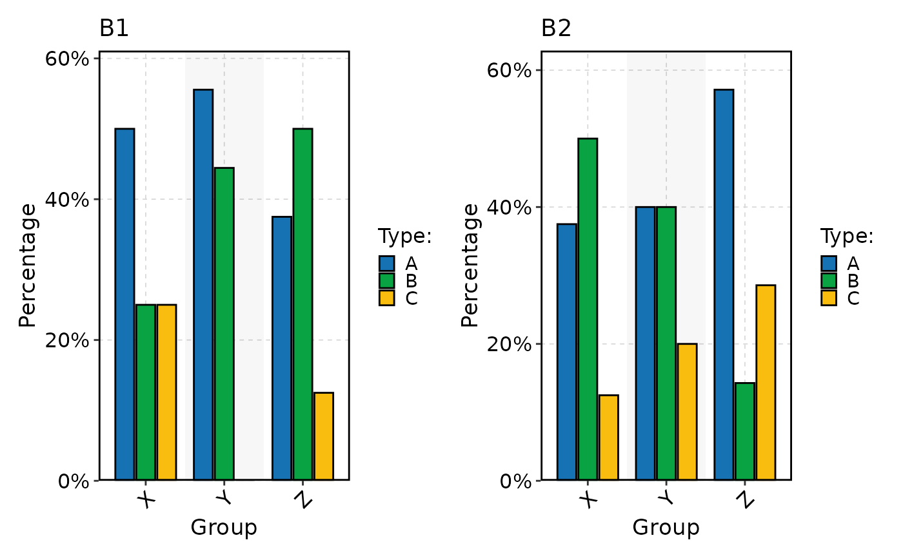
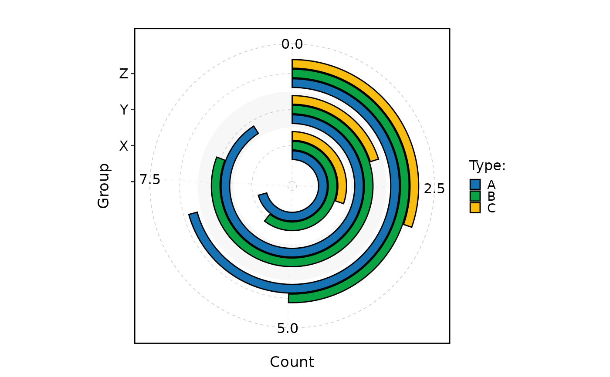
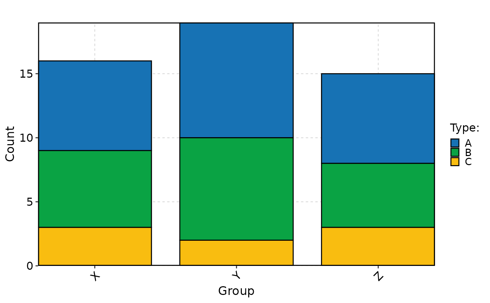
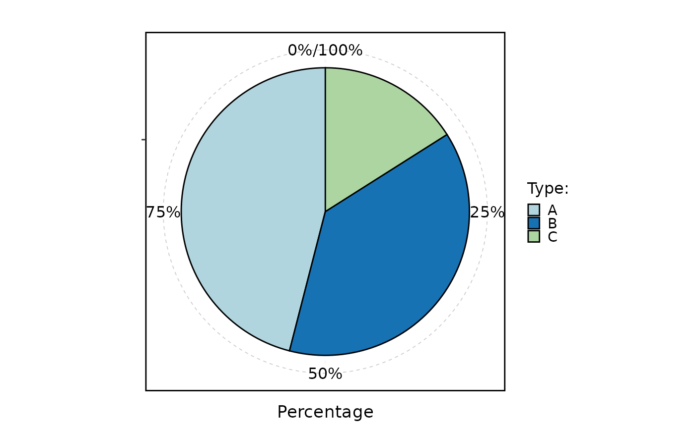
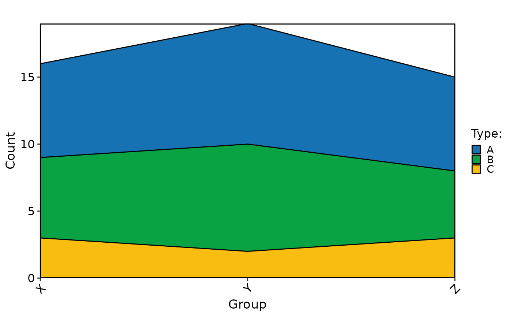
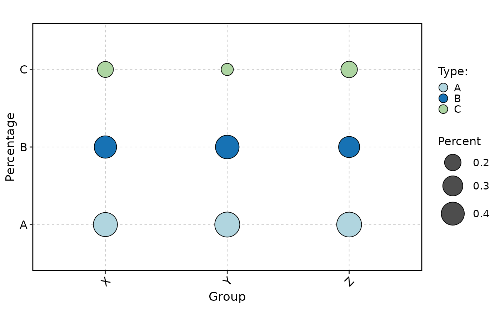
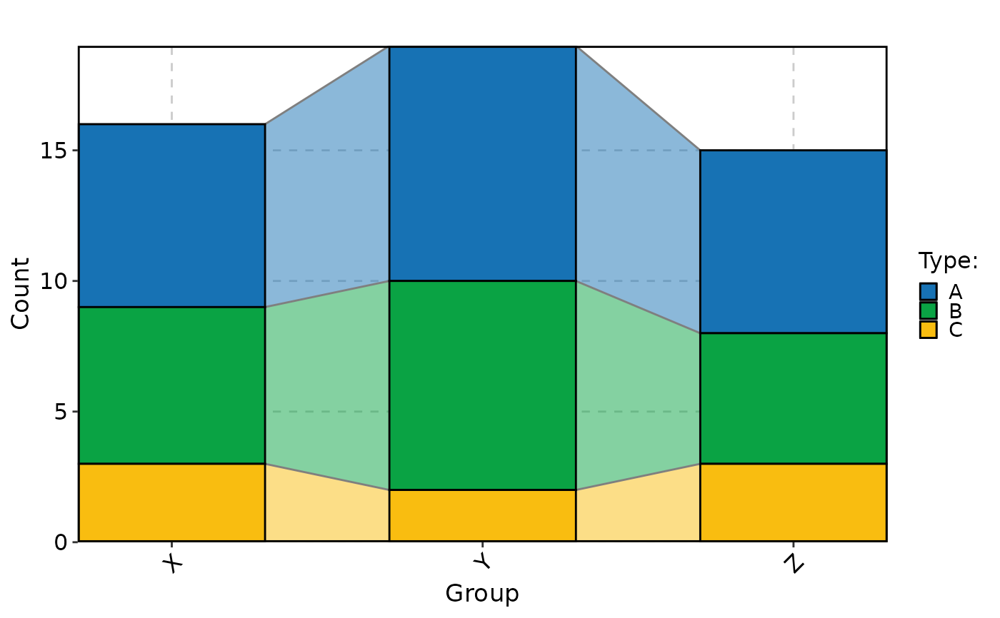

Visualizes data using various plot types such as bar plots, rose plots, ring plots, pie charts, trend plots, area plots, dot plots, sankey plots, chord plots, venn diagrams, and upset plots.
Usage
StatPlot(
meta.data,
stat.by,
group.by = NULL,
split.by = NULL,
bg.by = NULL,
flip = FALSE,
NA_color = "grey",
NA_stat = TRUE,
keep_empty = FALSE,
individual = FALSE,
stat_level = NULL,
plot_type = c("bar", "rose", "ring", "pie", "trend", "area", "dot", "sankey", "chord",
"venn", "upset"),
stat_type = c("percent", "count"),
position = c("stack", "dodge"),
palette = "Paired",
palcolor = NULL,
alpha = 1,
bg_palette = "Paired",
bg_palcolor = NULL,
bg_alpha = 0.2,
label = FALSE,
label.size = 3.5,
label.fg = "black",
label.bg = "white",
label.bg.r = 0.1,
aspect.ratio = NULL,
title = NULL,
subtitle = NULL,
xlab = NULL,
ylab = NULL,
legend.position = "right",
legend.direction = "vertical",
theme_use = "theme_this",
theme_args = list(),
combine = TRUE,
nrow = NULL,
ncol = NULL,
byrow = TRUE,
force = FALSE,
seed = 11
)Arguments
- meta.data
The data frame containing the data to be plotted.
- stat.by
The column name(s) in
meta.dataspecifying the variable(s) to be plotted.- group.by
The column name(s) in
meta.dataspecifying the grouping variable(s). Default isNULL.- split.by
The column name in
meta.dataspecifying the variable to split plots by. Default isNULL.- bg.by
The column name in
meta.dataspecifying the background variable for bar plots.- flip
Whether to flip the plot. Default is
FALSE.- NA_color
The color to use for missing values.
- NA_stat
Whether to include missing values in the plot. Default is
TRUE.- keep_empty
Whether to keep empty groups in the plot. Default is
FALSE.- individual
Whether to plot individual groups separately. Default is
FALSE.- stat_level
The level(s) of the variable(s) specified in
stat.byto include in the plot. Default isNULL.- plot_type
The type of plot to create. Can be one of
"bar","rose","ring","pie","trend","area","dot","sankey","chord","venn", or"upset".- stat_type
The type of statistic to compute for the plot. Can be one of
"percent"or"count".- position
The position adjustment for the plot. Can be one of
"stack"or"dodge".- palette
The name of the color palette to use. Default is
"Paired".- palcolor
Custom colors to use instead of palette. Default is
NULL.- alpha
The transparency level for the plot.
- bg_palette
The name of the background color palette to use for bar plots.
- bg_palcolor
The color to use in the background color palette.
- bg_alpha
The transparency level for the background color in bar plots.
- label
Whether to add labels on the plot. Default is
FALSE.- label.size
The size of the labels.
- label.fg
The foreground color of the labels.
- label.bg
The background color of the labels.
- label.bg.r
The radius of the rounded corners of the label background.
- aspect.ratio
Aspect ratio of the panel. Default is
NULL.- title
The title of the plot. Default is
NULL.- subtitle
The subtitle of the plot. Default is
NULL.- xlab
The label for the x-axis. Default is
NULL.- ylab
The label for the y-axis. Default is
NULL.- legend.position
The position of the legend. Can be one of
"none","left","right","bottom","top", or a two-element numeric vector. Default is"right".- legend.direction
The direction of the legend. Can be one of
"vertical"or"horizontal". Default is"vertical".- theme_use
The theme to use for the plot. Default is
"theme_this".- theme_args
Additional arguments to pass to the theme function. Default is
list().- combine
Whether to combine multiple plots into one. Default is
TRUE.- nrow
Number of rows when combining plots. Default is
NULL.- ncol
Number of columns when combining plots. Default is
NULL.- byrow
Whether to fill plots by row when combining. Default is
TRUE.- force
Whether to force plotting even when variables have more than 100 levels. Default is
FALSE.- seed
Random seed for reproducibility. Default is
11.
Examples
set.seed(1)
meta_data <- data.frame(
Type = factor(
sample(c("A", "B", "C"),
50,
replace = TRUE,
prob = c(0.5, 0.3, 0.2)
)
),
Group = factor(sample(c("X", "Y", "Z"), 50, replace = TRUE)),
Batch = factor(sample(c("B1", "B2"), 50, replace = TRUE))
)
meta_data$Region <- factor(
ifelse(meta_data$Group %in% c("X", "Y"), "R1", "R2"),
levels = c("R1", "R2")
)
StatPlot(
meta_data,
stat.by = "Type",
group.by = "Group",
split.by = "Batch",
plot_type = "bar",
position = "dodge"
)

StatPlot(
meta_data,
stat.by = "Type",
group.by = "Group",
stat_type = "count",
plot_type = "ring",
position = "dodge"
)
#> Warning: Removed 1 row containing missing values or values outside the scale range
#> (`geom_col()`).

StatPlot(
meta_data,
stat.by = "Type",
group.by = "Group",
stat_type = "count"
)

StatPlot(
meta_data,
stat.by = "Type",
plot_type = "pie"
)

StatPlot(
meta_data,
stat.by = "Type",
group.by = "Group",
stat_type = "count",
plot_type = "area"
)

StatPlot(
meta_data,
stat.by = "Type",
group.by = "Group",
plot_type = "dot"
)

StatPlot(
meta_data,
stat.by = "Type",
group.by = "Group",
stat_type = "count",
plot_type = "trend"
)
